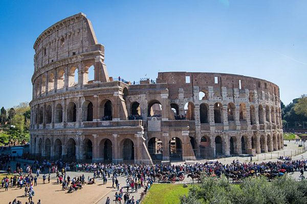
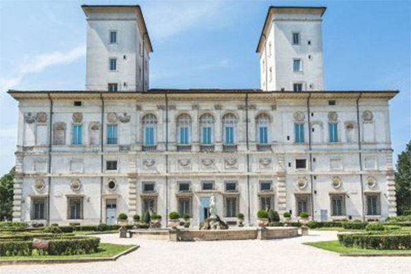
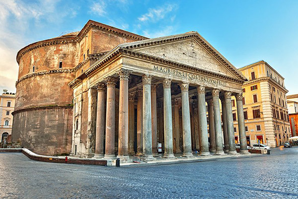

The Colosseum
Completed in 80A.D., this impressive amphitheatre was where gladiators fought.

Galleria Borghese
This gallery houses one of the most outstanding art collections in the world.

The Roman Forum
A cultural, economic, and political centre of ancient Rome. Includes important sites such as The Temple of Julius Caesar.

The Pantheon
This historic structure is the place of burial of two Italian kings as well as the tomb of renaissance painter Raphael.

Fontana di Trevi
Known as one of the most beautiful fountains in the world. About 3000 euros are thrown into the fountain every day.

St. Peter's Basilica
One of the largest churches in the world. It houses Michelangelo's The Pieta and other amazing artworks.